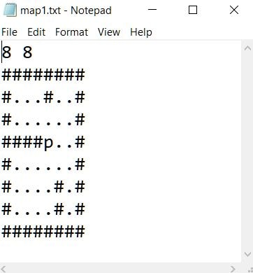

Remaking Castle Wolfenstain [wiki]
I am a big fan of videogames. Yet, as a programmer, I have never really had the chance to build anything as I am much too big of a fan of building things from scratch. And real 3D engines, coupled with the physics engines are beyond the scope of one person to create, especially in a short time frame.
Thus, I have decided to recreate the Wolfenstein engine, which due to its limitation to a 2d plane made for an interesting challenge while still allowing me to do everything from scratch, only calling onto library functions for drawing squares and lines.
First, I created a playable map. An older version of this had, like previously in Ray casting, a bunch of lines which you could draw shapes with. But I realized that a much nicer method would be to represent every level as a .txt file, where '#' symbols would represent walls, '.' would represent the floor (where the player could walk) and a 'p' symbol would be where the player spawns in. So each map then has, in its first line specified its width and height in integers, followed by on which line the symbols '.' and '#'.

I made the whole level a class. Within that class, we then add
this.player, which will be another player. I defined his
width as zero, as to prevent having to deal with many issues, so he is
just a point.
The player then got a position, a direction of looking and some other constants which would define its movement and rotation speeds. Then we add movement, for which we just check if a button is being pressed and if it is, we move accordingly. For collision, I also did not complicate much with collision. For every time the character wanted to move, I checked if the new position is inside of a wall. If it was, the movement direction was changed into the vertical and horizontal component and tried to move by those (as to allow sliding along the walls). (The constant distance is the distance x on the image belowand the angle is a - P is the player)
Then I created a class called Ray. I then made an array
of these and gave it to the Player object. All rays were then moved
and rotated in accordance with the movement of the player.
At first, all the rays were, to each other adjacent by the same,
constant angle. But this then appeared to be the first of the three
sources of the fisheye effect. The solution was then to imagine in
front of the player a row of equally spaced points (somewhat
resembling a screen) and shooting a ray though each. It is obvious
that the more to the side we go, the bigger the distance will be
between each two adjacent rays. Assuming the distance between each two
"pixels" was to be x, the angle is then calculated as
atan(x) (on image, the distance is d, the angle is a and
the value we look - the adjustted distance - is b)
To actually make the 3D graphics work, we actually just show this 2D world. The changing of height is what actually gives us the illusion of depth. Each ray is responsible for one column for one portion of the screen (as there are 200 rays, 1 200th of it). The height of the colored pixels is determined as constant/adjusted distance. The constant is just gotten through experimentation until something looks right.
You can play through two maps I made or try creating your own. The arrow keys on your keyboards will allow you to move around or if you are on a mobile device, the makeshift WASD keys will do that on the top of the screen.
On the left, we see the top down view and what is actually there. All of the orange lines are individual rays. On the right is the view as it would be seen on a game console.
Code on GitHub
 Uwu, have fun.
Uwu, have fun.
References
- None
Note: This is also the last post that is done as a part of my back-logging of all my older projects. While some older projects will still make their way here, this is the last one and after this one, all post will be writen approximetly at the same time as I actually endoulge myself with it.